1.1.3 N64 Hardware and System Features
Hardware Features
- The CPU is fast (about 100 MIPS) and includes the following on-chip cache memory:
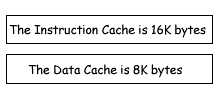
- N64 doesn't require a special dedicated chip to process graphics and audio as Super NES does. N64 uses software to execute almost all processes.
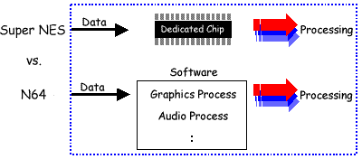
- RDRAM main memory can be used by the entire system. Programmers are free to divide up the main memory into buffers (frame buffer, audio buffer, Z-buffer, heap, texture buffer, and so on) as appropriate for each game program. It is a unified memory system.
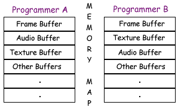
- Almost all processes are executed by the CPU and RCP working together.
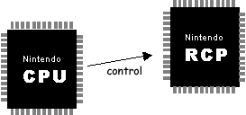
- The RCP consists of two internal processors the RSP (Reality Signal Processor) and the RDP (Reality Display Processor), I/O Interface, and control logic.
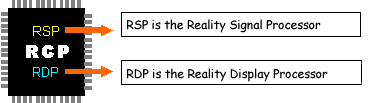
The RSP and RDP work together to execute GBI (Graphics Binary Interface) commands and render graphics into the frame buffer. The GBI commands are strung together into a specialized command list call the display list.
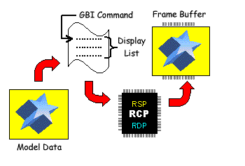
The RSP also interprets ABI (Audio Binary Interface) commands and creates linear PCM data using the sampling rate specified by the audio buffer.
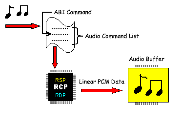
- The RSP interprets GBI and ABI commands by using software called microcode.
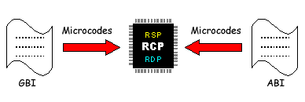
- The image drawn in the frame buffer is transferred to the video DAC (Digital-to-Analog Converter) through DMA (direct memory access). The image becomes the TV image there in the video DAC.
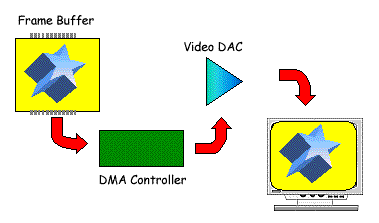
- The PCM data placed in the audio buffer is transferred to audio DAC through DMA. The audio becomes sound there in the audio DAC.
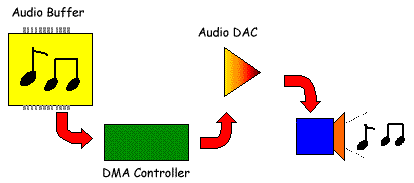
- For faster processing, game programs are not executed on the N64 Game Pak directly. Instead they are loaded into RDRAM first.
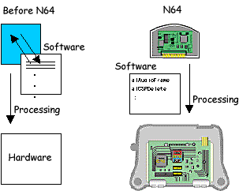
- Data coming from the Controller is read by way of the PIF chip as serial data. Similarly, data in the Controller Pak is also read and written by way of the PIF chip through the Controller as serial data.
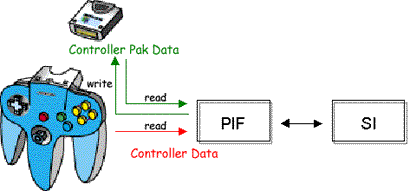
- The RDP creates the screen by using the Z-buffer (depth buffer) as shown in the following illustration. Note that this is a conceptual illustration only. In practice, the Z-buffer values range from -1.0 to 1.0.
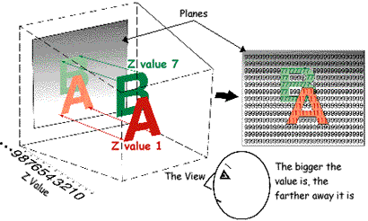
System (Software) Features
- Game applications are executed in the multi-thread N64 Operating System.
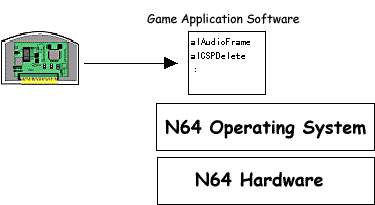
- Multi-thread programming provides the following advantages:
- You can run independent processes on a single piece of hardware at the same time.
- Threads provide a natural way to structure your program.
- Thread synchronization is assured because the threads communicate with each other by sending and receiving messages.
As a result, there are fewer bugs and debugging time is reduced.
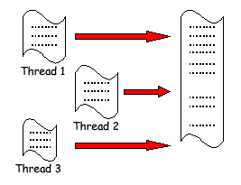
- Messages provide information throughput between threads.
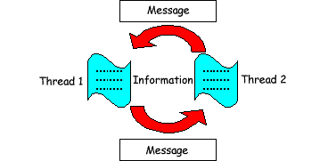
- Threads are executed according to their priority, not their actual position in the program code.
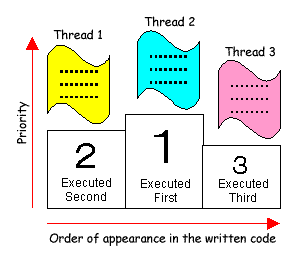
- Threads that receive interrupt information messages execute interrupt processing.
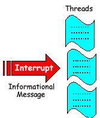
- A high-priority thread called the Scheduler manages all the other threads. The Scheduler thread manages messages for the threads by using tasks or the VI retrace (the vertical synchronizing interrupt).
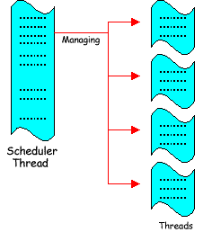
- The CPU executes threads comprised of several processing units (function calls,
macros, and so on). The RSP in the RCP, on the other hand, executes processing units called tasks.
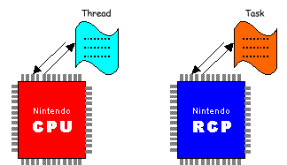
Nintendo® Confidential
Copyright © 1999
Nintendo of America Inc. All Rights Reserved
Nintendo and N64 are registered trademarks of Nintendo
Last Updated March, 1999